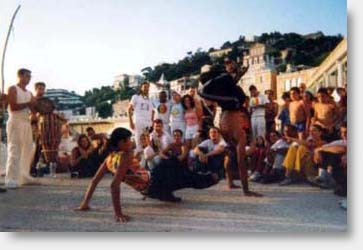

Mestre Camaleão

Mestre Camaleão очень яркий представитель капоэйры из Рио с чудесным голосом и неповторимой манерой игры, которая сочетает в себе элегантность и агрессию. Большой друг Mestre Russo и завсегдатай на Roda em Caxias. В данный момент его группа Filhos de Angola квартируется в Марселе (Франция). Каждое лето Местре устраивает мероприятие под названием Vadiando Entre Amigos .
Был учеником Mestre Arerê. После получения степени Местре, вместе со своим товарищем Marujo вышел из группы, чтобы основать собственную Filhos de Angola.
Автор прекрасного музыкального диска Vai na paz de Deus(скачать с блога Gringo)
Один из первых роликов с ним в ю-тубе Mestre Camaleão e Gato Félix
Пара нарезок:
Камалеао и Урубу - Mestre Camaleão et c.mestre Urubu de Fica
Единственный и мною видимых, кто нисколько не разводится на малиссию Местре Камалиао — это Местре Руссо.
…а на его безумные прыжки Руссо отвечает своей такой же безумной парафузой!
но о Местре Руссо подробно позже. А пока, уж коли Камалиао всеобщий любимчек — кидайте в коменты любимые с ним ролики.
Ещё говорят у Имаха на двд есть игра Камалеао и Кобра Мансы. Ух как посмотреть то хочется!!!